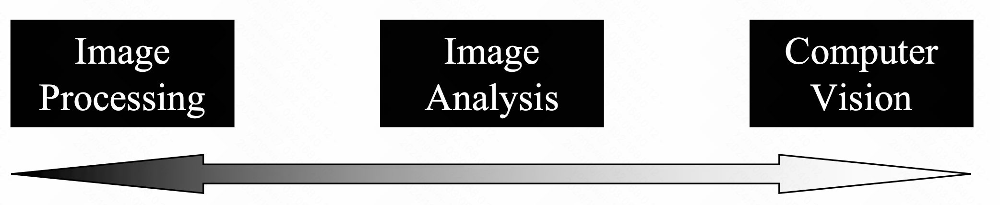
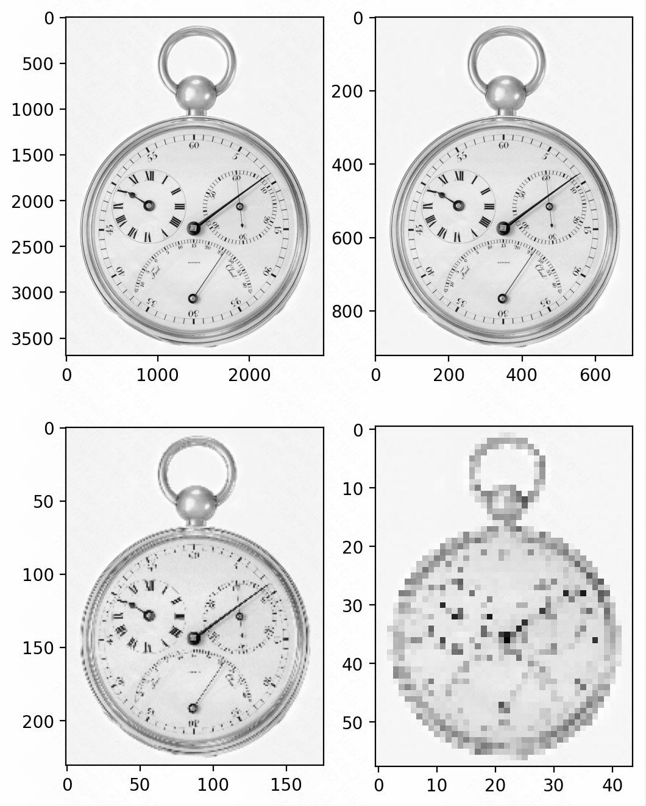
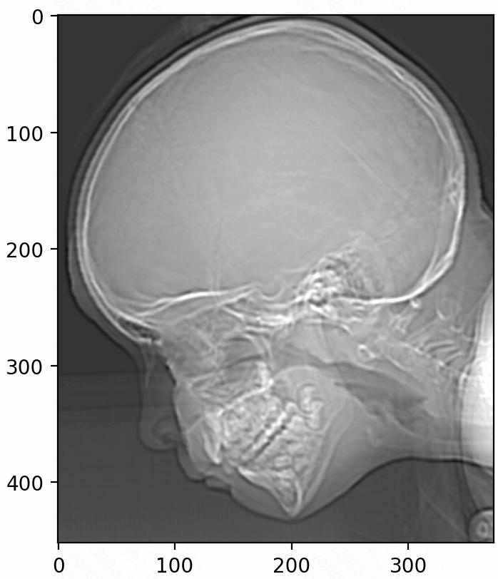
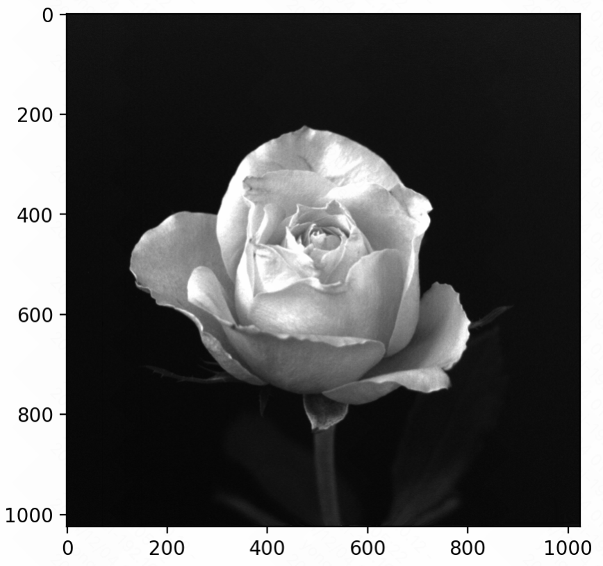
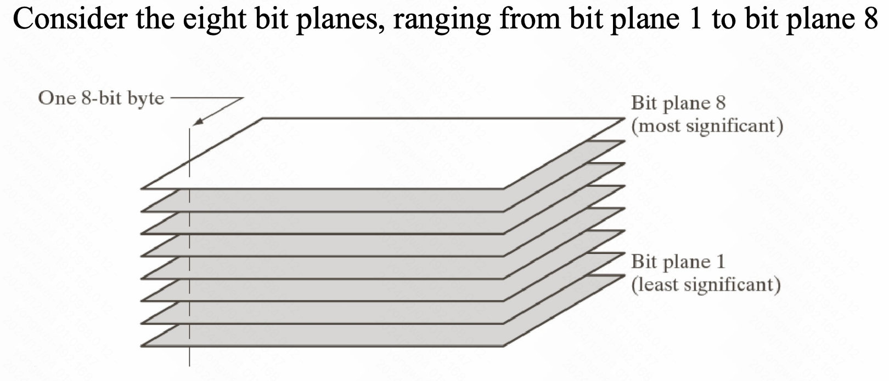

Image Processing
Concepts
-
Image Processing
-
Improvement of pictorial information for human interpretation
-
Processing of image data for storage, transmission, and representation for autonomous machine perception
-
Digital IP refers to processing of digital images by means of a computer
-
-
Computer Vision
- A branch of artificial intelligence
- Analyse and understand images
- Comparable to the human vision system, including
- Learning
- Being able to make inferences
- Taking actions based on visual inputs
-
IP vs CV
There is a continuum from IP at one end to CV at the other. The area Image Analysis is in between IP and CV.

Image Processing
Consider a monochromatic image, denote images by 2D functions of the form f(x, y).
Image Sampling & Quantization
An image may be continuous with respect to the x and y spatial coordinates and also in amplitude. To convert an image into digital form, the function has to be sampled in both coordinates and amplitudes
- Digitizing the coordinate values is called sampling
- Digitizing the amplitude values is called quantization
Image Sampling
- Example
1 | from skimage.transform import rescale |
The purpose of this code is to demonstrate the effects of repeatedly downscaling an image without applying any anti-aliasing filters. As the image is rescaled multiple times, the quality and resolution of the image will degrade, and the visual artifacts may become more pronounced.
Image Quantization
- False Contouring
False contouring can occur in digital images when the number of displayable colors is limited. It happens when the continuous tonal gradients in the original image are not accurately reproduced due to the limited number of discrete color levels available in the output device or image format.
False contouring is a direct consequence of the image quantization process. When the number of color levels is reduced too drastically, the resulting discrete steps between color levels become visible as false contours in the image.
1 | # The purpose of this code is to demonstrate the effect |
- Saturation and Noise
When an image is quantized, the continuous tonal range is mapped to a smaller set of discrete color levels. This can result in the amplification or accentuation of noise patterns, as the subtle variations in pixel values may be lost or masked by the discrete color levels.
In areas of the image with low contrast or subtle details, the quantization process can make noise more visible and pronounced, as the small variations in pixel values are more likely to be affected by the reduction in color levels.
1 | # The purpose of this code is to highlight the saturated pixels |
-
Bit Plane Slicing
Bit plane slicing is a technique used to analyze the contribution of individual bit planes (the binary digits that make up the pixel values) in a digital image.
Bit plane slicing can be used to understand the impact of quantization on the image, as the removal of lower-order bit planes during quantization directly affects the visual information contained in the image.
1 | import numpy as np |